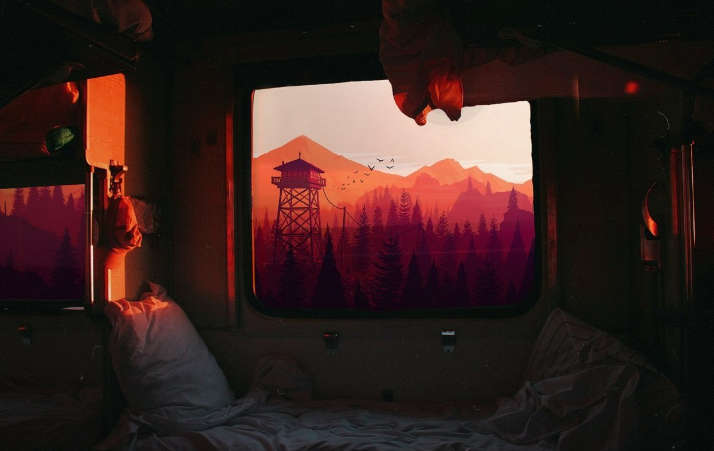

Behind the Shadow Drops 是日本后摇大团MONO乐队主脑Taka 的全新个人项目，首张专辑 《H a r m o n i c》将于9月问世，而谢玉岗作为国内后摇领域领军乐队惘闻乐队的核心，也将推出首张个人专辑《回声图书馆》。
早在2011年4月，惘闻乐队曾作为MONO巡演上海站的特别演出嘉宾在MAO livehouse 与MONO 同台演出，两支乐队还曾一同参演2014年的南方草莓音乐节。今年惘闻赴日本参加After Hours 音乐节，Taka 则是音乐节的主办方之一。在音乐上的各种交流，也让他们逐渐成为相识多年的挚友。
10月底，Behind the Shadow Drops将联合谢玉岗一同展开这次特别值得期待的联合巡演。
10月26日 成都 成都小酒馆
10月27日 北京 愚公移山
10月28日 上海 万代南梦宫上海文化中心 2F 未来剧场
预售：https://newnoise.taobao.com/ 秀动网
---
系统提示：你收到的豆邮来自你所关注的音乐人小站
早在2011年4月，惘闻乐队曾作为MONO巡演上海站的特别演出嘉宾在MAO livehouse 与MONO 同台演出，两支乐队还曾一同参演2014年的南方草莓音乐节。今年惘闻赴日本参加After Hours 音乐节，Taka 则是音乐节的主办方之一。在音乐上的各种交流，也让他们逐渐成为相识多年的挚友。
| 扁社 |
| 出版物 |
| 音乐 |
| 关于 |